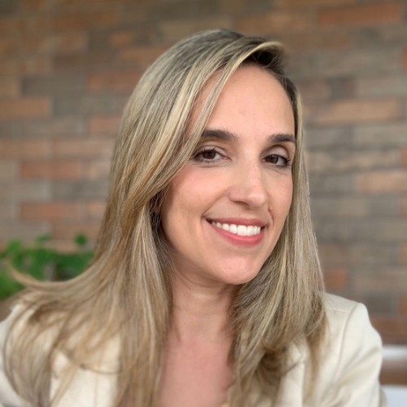
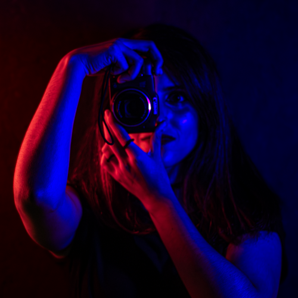
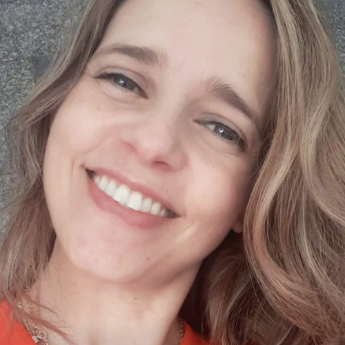
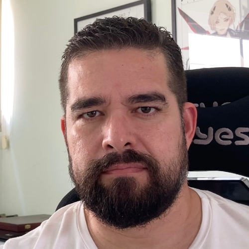
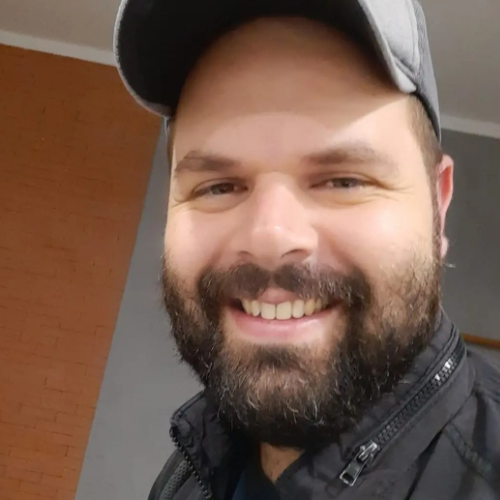
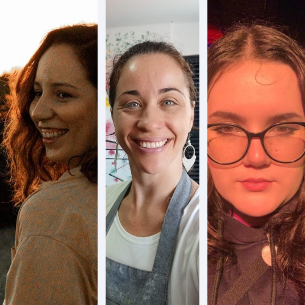
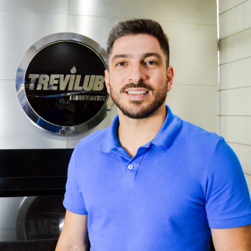
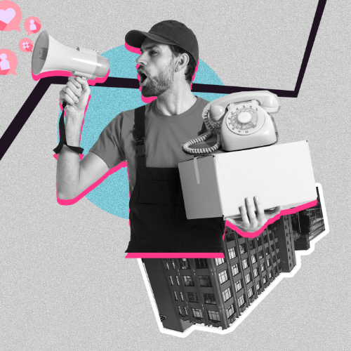

1° dia (11/11)
Logotipo com Alma Brasileira: Estrutura e Identidade
com Mirela Marques @mikamarques_
35 vagas
Público Externo
Cursos
Convidados
19h10 às 20h00
Lab. de Informática 5
Especialista em gestão de marcas, design estratégico e ux design.
Formada em design gráfico pelo SENAC-SP, bacharel em comunicação social pelo
SALESIANOS-SP, Especialista em Marketing e Negócios pela METODISTA-SP, Especialista
em Design Estratégico de Marcas pela FACAMP-SP, Especialista em User Experience pela
TERA. É designer de marcas e de experiência do usuário há quase 20 anos, fundadora da
Ginga&Co e da Zirí, entusiasta em fotografia e história da arte, tem cachorro, tem gato e
muita história para contar sobre os desafios do design nos negócios.
PALESTRA:
Brasilidade e cultura nacional, a identidade de um Brasil
plural
com Paula M. Braga @paulabragamb
95 vagas
Público Externo
Cursos
Convidados
19h10 às 20h00
Sala VIP I
Arquiteta e Urbanista e Mestre em Urbanismo (PUC-Campinas). Doutora em
Arquitetura e Urbanismo (IAU/USP). Pós-doutorado – Equidade urbana em territórios do precário
(Pró-reitoria de Cultura e Extensão Universitária/USP). Pós-doutorado – Políticas Públicas, corpo e
sociedade (FEF/UNICAMP). Pesquisadora do Laboratório de Estudos do Ambiente Urbano Contemporâneo
(IAU/USP). Pesquisas relacionadas a intervenções urbanas em áreas centrais históricas, preservação
do patrimônio cultural e aspectos sociais vinculados, banalização da paisagem e identidade local.
“A marca da brasilidade no Branding”
Estratégias e Design autênticos para um
Brasil com S
com Daniele Basanela @empaticacomunica
65 vagas
Público Externo
Cursos
Convidados
20h30 às 21h30
Sala VIP II
É formada em publicidade com MBA em Marketing pela FGV e Branding pela Rio
Branco. Há mais de 20 anos no mercado de comunicação e marketing, já passou por agências, foi
professora universitária em cursos de comunicação por 10 anos e atuou por 5 anos no mundo
corporativo sendo a responsável pelo gerenciamento das marcas da Holding CPFL Energia. Hoje leciona
o módulo de Branding no MBA de Marketing e Negócios da FAM, é Head de Estratégia na MELT DESIGN e
consultora independente de comunicação estratégica e branding.

Nada se cria, tudo se copia:
Técnicas para ser mais criativo - Oficina 1/2
com Ana Faiz @_anafaiz @faizproduções
30 vagas
Público Externo
Cursos
Convidados
20h00 às 21h30
Sala de Fotográfia
Conheça nossa mestre de workshop inspiradora! Publicitária, jornalista, creator, fotógrafa e
empresária da Faiz Produções, ela traz uma bagagem rica e diversificada que certamente irá
enriquecer nosso evento de design. Sua visão única sobre a intersecção entre mídia e criatividade
promete transformar a maneira como você pensa sobre o audiovisual. Não perca a oportunidade de
aprender com uma verdadeira referência no mercado!

2° dia (12/11)
Empreendedorismo, plano de negócio e posicionamento de marca para
pequenos empresários no Brasil (MEI)
com Roberta Batista @lanaroconvites
95 vagas
Público Externo
Cursos
Convidados
19h10 às 20h00
Sala VIP I
Conheça nossa palestrante empreendedora! Empresária à frente da empresa de
convites, caixas e papelaria personalizada Lá na Rô Convites, ela vem compartilhar sua trajetória
inspiradora no mundo do empreendedorismo. Com uma paixão pela criatividade, sua palestra trará
insights valiosos sobre como transformar ideias em negócios de sucesso. Não perca a oportunidade de
se inspirar com essa referência no setor!

Desafios e conquistas no mercado de quadrinhos
com Fabiano Neves
95 vagas
Público Externo
Cursos
Convidados
20h30 às 21h10
Sala VIP I
Nascido em 1975, começou sua carreira como artista profissional aos 19 anos. Seu
primeiro trabalho nos Estados Unidos foi publicado em 2000 pela Dark Horse, e desde então teve obras
lançadas pelas grandes editoras americanas, como Marvel, DC Comics e Dynamite Entertainment.
Atualmente, é ilustrador e co-criador da série autoral The Few and Cursed. Além dos quadrinhos,
possui experiência no mercado publicitário e de games, ampliando sua atuação artística para
diferentes áreas.

WORKSHOP: Brasilidade no marketing de influência
com Prof. Tiago Moraes @falecommoraes
65 vagas
Público Externo
Cursos
Convidados
19h30 às 21h00
Sala 146 (Bloco 5)
Prepare-se para uma imersão única no universo dos artistas brasileiros com um
especialista de peso! Professor universitário, com 17 anos de experiência como redator publicitário,
passagens por agências como a Agência Casa, hub digital da JWT, e colaborações com grandes marcas
como Coca-Cola, Warner e Microsoft, nosso convidado traz uma bagagem premiada em festivais de
renome, incluindo Cannes e o Wave Festival. Pós-graduado em Marketing Digital e eleito Young Lions
Brasil em 2012, ele vai compartilhar toda sua expertise e paixão pela brasilidade em um workshop
imperdível. Não perca a chance de aprender com um dos grandes nomes do mercado!

RODA DE CONVERSA:
Desafios de representar o brasil de forma autêntica e
não estereotipada
com Profª. Laísa, Marília e Yasmin
65 vagas
Público Externo
Cursos
Convidados
19h30 às 21h00
Sala VIP II
- Especialista em História da Arte pela Claretiano (2019); bacharela em design pela Faculdade de Campinas (FACAMP - 2012). Atualmente, atua como Designer Gráfica na Têxtil Molinatex, atuando principalmente no desenvolvimento de estampas têxteis digitais e rotativas, também como docente na Faculdade de Americana - FAM e é sócia fundadora da NÓ(S) Criativo. Além disso, é Designer gráfica voluntária na igreja Ek Kaleo - Comunidade em Cristo, em Americana - SP. Marília Marton @mamarton.art
- Artista plástica, arte-educadora, professora de Arte e Little Maker, muralista e ilustradora. Natural de Americana, formada em Artes Visuais pela UNESP/ Bauru, pós-graduada em Psicopedagoga na UNISAL, professora há 20 anos, e mãe da Flora e da Alice. Yasmin Ribeiro @yaszribeiro
- Aluna do 4° Semestre de Design Gráfico na Faculdade de Americana - FAM, e organizadora líder do comitê de palestras do evento. Atuará como mediadora/entrevistadora na roda de conversa.
Saiba mais sobre elas!
Laísa Lemes @laisalemes
Nada se cria, tudo se copia:
Técnicas para ser mais criativo - Oficina 2/2
com Ana Faiz @_anafaiz @faizproduções
30 vagas
Público Externo
Cursos
Convidados
20h00 às 21h30
Sala de Fotográfia
Conheça nossa mestre de workshop inspiradora! Publicitária, jornalista, creator, fotógrafa e
empresária da Faiz Produções, ela traz uma bagagem rica e diversificada que certamente irá
enriquecer nosso evento de design. Sua visão única sobre a intersecção entre mídia e criatividade
promete transformar a maneira como você pensa sobre o audiovisual. Não perca a oportunidade de
aprender com uma verdadeira referência no mercado!
3° dia (13/11)
Empreendedorismo
com Bruno Trevizan
450 vagas
Cursos
Convidados
19h00 às 20h15
Auditório Jamil Salomão
Fundador e CEO da Empresa Trevilub Americana SP

Processo Criativo no Mercado Publicitário
com Delay Nascimento
450 vagas
Cursos
Convidados
20h30 às 21h30
Auditório Jamil Salomão
Agência Audaz

4° dia (14/11)
Liderança Exponencial
com Rodrigo Lima
450 vagas
Cursos
Convidados
19h00 às 20h15
Auditório Jamil Salomão
Currículo indisponível

Criação de Imagens através da IA
com Prof. Jose Alberto Sinclair
450 vagas
Cursos
Convidados
20h30 às 21h30
Auditório Jamil Salomão
Currículo indisponível
Curta se achou a pagina útil e acompanhe Info.FAM